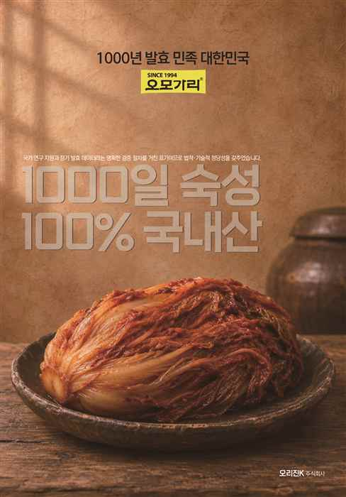
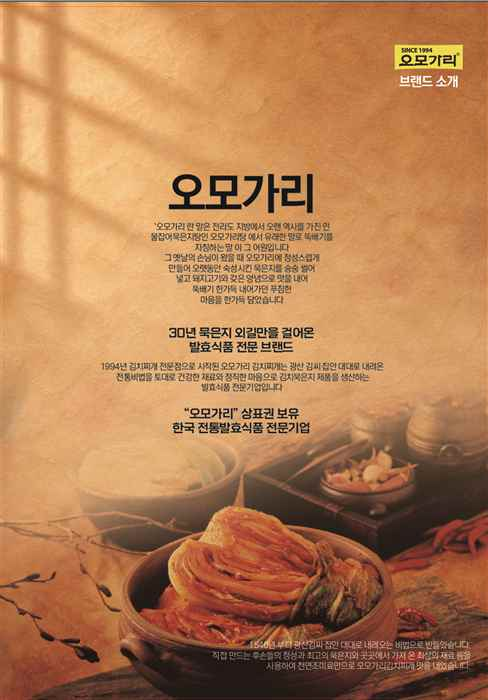
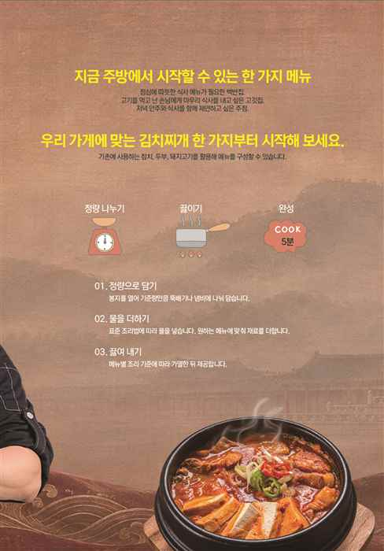
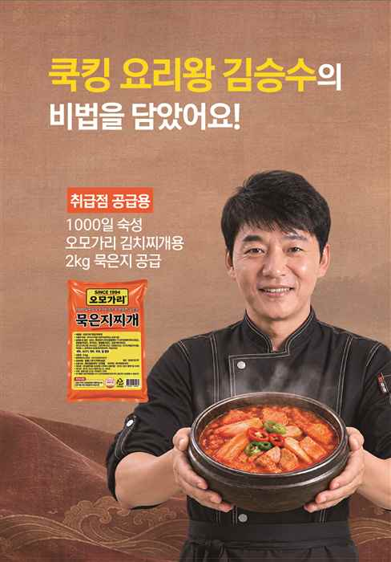

OMOGARY · SINCE 1994
묵은지의 깊은 맛,
당신의 가게와
함께합니다.
1994년 김치찌개 전문점에서 출발한 오모가리. 창업주 김형중 회장이 전통 묵은지의 맛을 바탕으로 제품을 개발하며 한국 발효식품의 가치를 이어갑니다.
오모가리글로벌㈜ · 오모가리 전국 취급점
음식점 납품 · 본사 공급 · 전문점 창업

함께하는 세 가지 방식
필요한 협력의 형태에
맞춰 시작하세요.
✳ 사업별로 담당 내용을 구분해 문의를 접수합니다.

A TASTE WITH A STORY
1994년부터 이어온
묵은지의 한 길
오모가리 브랜드 소개 자료는 1994년 시작된 김치찌개 전문점의 이야기와 전통 방식으로 숙성한 묵은지 제품을 소개합니다. 매장에서는 제품을 활용해 메뉴의 깊이를 더하고, 본사 공급과 전문점 창업 상담으로 협력의 범위를 넓혀갑니다.
제품 규격·원재료·표시 사항은 최신 제품 라벨과 공급 조건을 기준으로 확인해 주세요.
PRODUCT & MENU
한 가지 베이스로
가게 메뉴에 맞게
제공 자료에는 김치찌개용 묵은지 제품과 다양한 메뉴 활용 예시가 담겨 있습니다. 메뉴 구성과 조리 방식은 매장 환경에 맞춰 상담할 수 있습니다.

재료를 더해 끓이면
한 끼 메뉴가 완성됩니다.참치 · 두부 · 돼지고기 등 매장 메뉴에 맞춰 활용
메뉴 예시는 제공된 참고 자료에 따른 것으로, 실제 제품별 조리법 및 표시 사항을 확인 후 사용하세요.
01 / RESTAURANT SUPPLY
음식점 납품
지금 운영 중인 메뉴에
오모가리 묵은지의 맛을 더해보세요.
일반음식점 대상 제품 공급 상담입니다. 사용 예정 메뉴와 지역, 예상 주문량을 알려주시면 공급 가능 여부와 조건을 안내합니다.
02 / BUSINESS PARTNERSHIP
프랜차이즈 본사 공급
메뉴 개발과 상품 기획에
맞는 공급 방식을 논의합니다.
프랜차이즈 본사·식품 기업을 위한 별도 B2B 상담입니다. 적용 브랜드와 도입 규모, 필요한 제품 형태를 알려주세요.
03 / FRANCHISE
오모가리 전문점 창업
전문점 창업을
구체적으로 상담해 보세요.
오모가리 제품을 활용한 전문점 프랜차이즈 사업 상담입니다. 희망 지역과 창업 시기, 준비 상황을 바탕으로 다음 단계를 안내합니다.
가맹 조건·비용·수익 관련 사항은 공식 안내와 계약 전 제공 자료를 확인해 주세요.

GOOD FOOD, GOOD PARTNERSHIP
좋은 한 그릇이
새로운 기회가 되도록
궁금한 사업 분야를 선택해 상담을 남겨주세요.
문의 내용은 해당 분야로 구분해 전달됩니다.